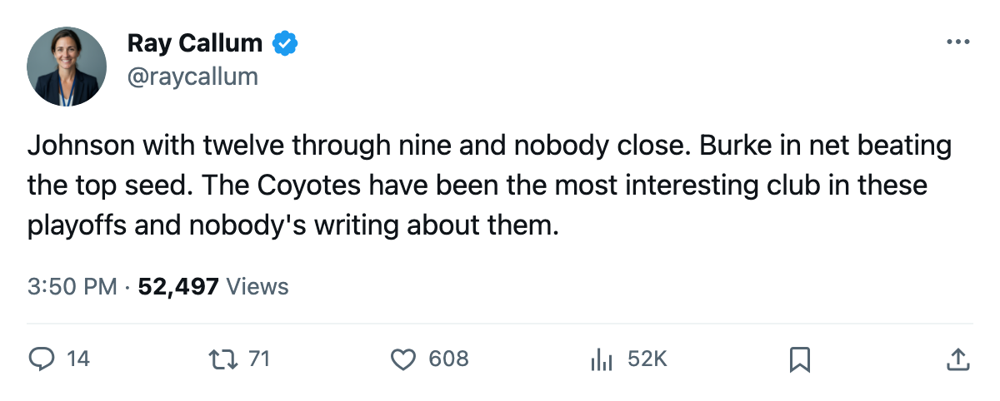

Numbers Game: Mike Johnson has 12 and the 8th seed still breathes
Phoenix trails Dallas 2-1 but leads all playoff scorers through 9 games, and the next one is at home.
 Ray CallumSenior correspondent · Home Ice Network
Ray CallumSenior correspondent · Home Ice Network Mike Johnson87 has 12 points in 9 games. No other player in these playoffs has more.
Mike Johnson87 has 12 points in 9 games. No other player in these playoffs has more.
 Phoenix Coyotes trails
Phoenix Coyotes trails  Dallas Stars 2-1 in the second round after losing the third game 4-1 on the 24th. The Coyotes won 3-1 in Dallas on the 24th to even the series. Game 4 is at Phoenix Coyotes on 2005-04-28.
Dallas Stars 2-1 in the second round after losing the third game 4-1 on the 24th. The Coyotes won 3-1 in Dallas on the 24th to even the series. Game 4 is at Phoenix Coyotes on 2005-04-28.
 Mike York80 of
Mike York80 of  Edmonton Oilers has 12 in 8.
Edmonton Oilers has 12 in 8.  Mike Modano88 has 6 in 6 for the Stars.
Mike Modano88 has 6 in 6 for the Stars.
 Mike Sillinger88 has 9 points in 9 games and
Mike Sillinger88 has 9 points in 9 games and  Steve Konowalchuk85 has 8 assists.
Steve Konowalchuk85 has 8 assists.  Shane Doan86 has 6 goals.
Shane Doan86 has 6 goals.
Burke has carried the weight
 Sean Burke88 is 5-3 with a 2.21 GAA and a .914 save percentage in 8 playoff games. He beat
Sean Burke88 is 5-3 with a 2.21 GAA and a .914 save percentage in 8 playoff games. He beat  Colorado Avalanche in 7 games in the first round, 8th seed taking out the top seed. The Coyotes have won 3 of 4 against the Presidents' Trophy winners this series.
Colorado Avalanche in 7 games in the first round, 8th seed taking out the top seed. The Coyotes have won 3 of 4 against the Presidents' Trophy winners this series.
Phoenix Coyotes needs a win on 2005-04-28 to keep the series at 2-2. A loss puts them at 1-3 with the next game back in Dallas.
The season series between Dallas and Phoenix went to the Stars 5-3-0. The Coyotes outscored  San Jose Sharks and
San Jose Sharks and  Los Angeles Kings combined by fewer goals than the 16-point gap between them and Dallas in the standings, 93 to 109.
Los Angeles Kings combined by fewer goals than the 16-point gap between them and Dallas in the standings, 93 to 109.
